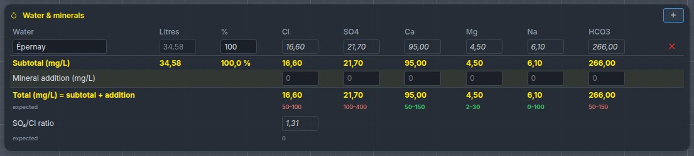
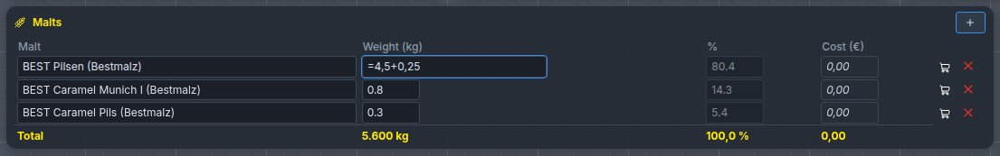
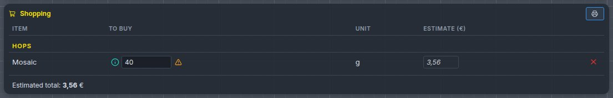

OpenMaltForge documentation
OpenMaltForge (formerly OpenBrew) is a desktop application for designing beer recipes: gravity, bitterness and colour calculations, water and minerals, brewing process, costs, stock and shopping list, recipe library, printable labels and brew sheet.
Getting started
- Linux: install the
openmaltforge_<version>_amd64.debpackage (“OpenMaltForge” menu entry) or run theopenmaltforge_<version>_linux_amd64program directly. - Windows: run
OpenMaltForge_<version>.exe. - macOS: unzip
OpenMaltForge_<version>_macos_apple_silicon.zip(M1, M2… Macs) or…_macos_intel.zip, dragOpenMaltForge.appinto Applications; on first launch, right-click the application then “Open” (application not signed by Apple).
OpenMaltForge opens in its own window (engine of the Chrome, Chromium, Edge or Brave browser installed on the computer).
All the data is stored in a single file: ~/OpenMaltForge/openmaltforge.sqlite (home folder, OpenMaltForge
sub-folder). On first launch, the OpenBrew database (~/OpenBrew/openbrew.sqlite) is taken over
automatically; the old file is not modified.
OpenMaltForge always opens on the Design screen.
A new database is filled with the starter data: malts, hops, yeasts, BJCP 2021 styles, waters, ingredients, fonts.
The interface

- Menu: Design, Library, the databases (Malts, Hops, Yeasts, Waters, Styles, Ingredients, Consumables), HTML, Labels, Brew sheet, Settings, then the Documentation icon (open book) that shows this page.
- Save: immediately writes all the data to the database. An automatic save also takes place (every 5 minutes by default, adjustable in Settings › General settings).
- “Database: openmaltforge” indicator (name of the open database, without “.sqlite”): green when everything is saved. If there is a problem (program closed, write refused), an orange warning appears; a click retries the save.
- Notification area (under the menu): temporary messages in green (save, calculation), errors in red, persistent warnings in orange (for example a mash ratio too high for the tun). Several messages are shown side by side.
- Theme: the sun / moon switch, top right, toggles between the dark and light themes; the choice is remembered.
- Footer: licence (GNU GPL v3, click to read the text) and version number.
Designing a recipe
The Design screen holds the current recipe. Everything is recalculated as you type.
A double-click on the title of a section folds that section only: just its title remains, followed by a chevron showing that it is folded, and its yellow line, at the same width; its buttons (＋…) only appear once the section is unfolded. A double-click on the title of a radar chart (Hops, Malts, Yeast) folds the whole row of radar charts. Another double-click unfolds; the choice is remembered.
Recipe and targets
- Recipe, Style (BJCP 2021 styles: drop-down list on click, or type at least 3 letters to filter, then arrows and Enter or a click; an unknown name restores the previous style), Volume to bottle, Mash ratio (L/kg), brewing and bottling dates.
- Dates:
- Brewing date: empty in a new recipe (＋ New recipe). Filling it in means the beer is brewed: the recipe’s components (malts, hops, yeasts, ingredients, consumables, mineral waters) are deducted from stock, only once, and a message tells how many were, and the recipe gets the green “Brewed” tick in the Library (list and cards); clearing it puts the components back in stock and removes the tick. It is also used for the batch number (
year#rank) on labels and in the HTML. Each change of the brewing date saves the recipe automatically (Library and database), like the Save button. - Bottling date: filling it in shows the Batch tasting analysis section; the HTML shows the bottling date and the analysis. It touches neither stock nor the “Brewed” tick. It cannot be earlier than the brewing date: such an entry is refused (red message) and the previous value is restored; likewise, the brewing date cannot be later than the bottling date.
- Brewing date: empty in a new recipe (＋ New recipe). Filling it in means the beer is brewed: the recipe’s components (malts, hops, yeasts, ingredients, consumables, mineral waters) are deducted from stock, only once, and a message tells how many were, and the recipe gets the green “Brewed” tick in the Library (list and cards); clearing it puts the components back in stock and removes the tick. It is also used for the batch number (
- Target OG, Target IBU and the Calculate button: adjust the recipe to reach the original gravity and bitterness you want, without changing its make-up.
- The targets: Target OG = original gravity aimed at (e.g.
1.060); Target IBU = bitterness aimed at, in IBU (e.g.25). A new recipe takes them from the Default values in Settings (“Default target OG”, “Default target IBU”). When you change one of them, the matching cursor of the summary moves straight to the new target, and the recipe is recalculated (as with Calculate) as soon as you release the field’s arrows, press Enter or leave the field. The Process table also uses them (the target OG sets the gravity after the ice). - Before the calculation: if you entered malts or hops as percentages and they do not add up to 100 %, a window offers to scale them to 100 % (rule of three); if you refuse, nothing is calculated.
- 1. Malts: OpenMaltForge computes the recipe’s OG from the weight of each malt, its potential (Malts database), the equipment efficiency and the volume to bottle. All malts are multiplied by the same factor = (target OG − 1) ÷ (current OG − 1). The proportions between malts do not change, so neither do the relative colour nor the character of the recipe.
- 2. Hops: with the new OG, bitterness is recalculated (Tinseth formula, multiplied by the coefficient of the use: First Wort, Boil, Whirlpool, Hopstand, Dry hop — Settings › Hop utilisation coefficients). All hops whose coefficient is not zero are multiplied by the same factor = target IBU ÷ current IBU. To keep a use unchanged (dry hop, for example), set its coefficient to 0.
- Example: 5 kg of malts give an OG of 1.050 and 40 g of hops 20 IBU; with a target OG of 1.060 and a target of 25 IBU, the malts go to 6 kg (× 60/50 = × 1.2), then the hops are adjusted for 25 IBU at the new gravity.
- After the calculation: weights are rounded (to the gram for malts, to a tenth of a gram for hops) and percentages switch back to weight mode. The recipe summary, costs and Process are recalculated, the recipe is saved, and a green notification shows the target OG and IBU. Quantities already in the shopping list do not change (they are frozen): an orange triangle flags those that become insufficient.
- Error messages (in red): empty targets; OG outside 1.010 to 1.200 or zero IBU; no malt recognised in the database (or zero weight); no contributing hop (unknown name, zero weight or time, or every use with a coefficient of 0). In these cases the recipe is not changed.
- The targets: Target OG = original gravity aimed at (e.g.
- ＋ New recipe: creates a new recipe; targets and ratio take the default values from Settings and the shopping list is emptied. The tables are filled at random from your databases: one base malt (EBC ≤ 10) and two other malts, two hops (bittering 60 min, aroma 10 min) and one yeast; the quantities are then adjusted to the targets (OG, IBU) as with the Calculate button. The brewing date stays empty.
- Aroma radars for malts, hops and yeasts: profile of the recipe, value shown when hovering over a point, enlarged on click (Esc to close), exported as an image with the PNG buttons (dark or light background).
Malts, hops, yeasts

- The ＋ button in the title adds a row; the red cross deletes it.
- Name: type at least 3 letters to choose from the database (the maltster is shown after the malt name).
- Weight or percentage: enter the weights, or the percentages (the weight is then calculated; entering a weight again switches back to weight mode).
- Hops: weight, use (First Wort, Boil, Whirlpool, Hopstand, Dry hop) and time; IBUs are calculated with the Tinseth formula, weighted by the utilisation coefficients from Settings.
- Yeasts: number of sachets, attenuation and flocculation of the strain.
- Cart at the end of the row: adds the component to the shopping list (see Shopping list). It is orange when the stock is not enough, green when the component is already in the list.

Water and minerals

- Choose one or more waters (“Waters” database) and their share, in litres or as a percentage.
- The ions (Cl, SO4, Ca, Mg, Na, HCO3) of the blend are compared with the style ranges; the additions row (mg/L) calculates the mineral quantities, which are added automatically to the recipe ingredients (“— auto” rows).
Ingredients and consumables

Rests, water quantities, priming


Recipe summary and costs

Original gravity, IBU (just below, the two draggable cursors), final gravity, attenuation, flocculation, colour (EBC / SRM), alcohol, IBU / OG and RBR ratios, with the expected range for the chosen style, then the estimated colour of the beer.
Draggable cursors: the OG and IBU cursors have a small round handle above them. Drag it with the mouse: the target OG or target IBU changes like the cursor value (the field follows live); on release, the recipe is recalculated as with the Calculate button and the cursor stays where you dropped it. The other cursors are indicators and do not move.

Sensory analysis

Tasting date, measured gravities, actual ABV, colour, clarity, head, carbonation, then notes and comments for each criterion (aroma, appearance, flavour, mouthfeel, overall impression).
Entering mathematical expressions
In any input field, a text starting with = is calculated. The result replaces the formula when you confirm with Enter or leave the field, and it is taken into account like a normal entry.

=4,5+0,25 in the weight (kg) of the first malt…
| Element | Syntax | Example | Result |
|---|---|---|---|
| Addition, subtraction | + - | =4.5+0.25 | 4.75 |
| Multiplication, division | * or ×, / or ÷ | =3*(2+1.5)/4 | 2.625 |
| Power | ^ | =2^10 | 1024 |
| Parentheses | ( ) | =(20-12)*1.5 | 12 |
| Percentage | % after a number (÷ 100) | =30*85% | 25.5 |
| Square root | sqrt( ) | =sqrt(16) | 4 |
| Absolute value | abs( ) | =abs(12-20) | 8 |
| Rounding | round( ) | =round(40/3) | 13 |
| Negative number | - in front | =-2+5 | 3 |
- The comma or the point can be used as the decimal separator (
4,5=4.5); spaces are ignored. - Usual precedence: parentheses, then power, then multiplication and division, then addition and subtraction.
- In a numeric field, the = key (or pasting text that starts with
=) switches the field to text entry while you type the formula. - An invalid formula (missing parenthesis, division by zero…) is not applied: the field flashes red and its tooltip says “Invalid formula”.
- The result is rounded to 12 significant digits.
=5.6*80%), convert 12 oz to grams (=12*28.35), complete a volume (=30-4.2-1.5).Shopping list and stock

Automatic additions
- A malt, hop, yeast, ingredient, consumable or mineral water used in the current recipe enters the list as soon as the recipe uses up its stock (quantity required ≥ stock); the suggested quantity is what is missing (or the quantity used when the stock falls exactly to zero). For waters, it is the litres of each mineral water in the blend; tap waters are never added.
- It leaves the list automatically as soon as the stock is enough again (for example by lowering the quantity in the recipe).
- Frozen quantities: once an item is in the list, its quantity no longer changes by itself (“Calculate” button, changing a row…). If it becomes lower than what is missing, an orange triangle appears next to the quantity (its tooltip shows what is missing) and an orange notification lists the items concerned; correct the quantity to make them disappear.
- Components not used by the recipe are never added, even with a stock of zero.
- ＋ New recipe empties the shopping list (manual additions included); it then fills up again from the new recipe.
- Component removed from the recipe: when you delete a component from the recipe (or replace it with another), it also leaves the shopping list — including the malt, hop and yeast proposed by default in a new recipe, and an item added with the recipe cart. Only items added from the database screens (Malts, Hops…) stay.
Manual additions
- Cart at the end of a recipe row: adds the component if it is not already in the list (missing quantity, otherwise the quantity used by the recipe).
- Cart in the database screens (Malts, Hops…, mineral waters): adds the item with the quantity missing for the recipe, or a default quantity.
- An item added by hand, or whose quantity you change, is never removed automatically.
- The cross removes an item; if it is still missing for the recipe, it is not put back as long as the stock remains used up.
- The printer icon in the title prints the shopping list (or saves it as PDF).
Info button
- The ⓘ button, just before an item’s quantity to buy, gives the stock status of the component: hold the mouse over it for one second (or click) to see the current stock, the need of the current recipe, the stock after purchase (current stock + quantity to buy) and what will remain after brewing (in red if something is still missing). If the recipe is already brewed, the bubble reminds you that its consumption is already deducted from stock; an item missing from the database has no known stock.
Stock
- Each database has a stock column (kg for malts, g for hops and ingredients, sachets for yeasts, units for consumables, litres for waters).
- Waters database: price/L and stock (L) for mineral waters; their cost is included in the water cost of the recipe.
- When the recipe’s brewing date is entered, its components are deducted from stock, only once. Clearing the date puts them back in stock.
Library and imports

- “Save” in the Design screen stores the current recipe in the library (updated if it is already there).
- Shopping list on loading: when a recipe is opened from the library (pencil, card or copy) and the shopping list is not empty, a window asks whether to empty and recalculate it for this recipe (“Yes”) or to keep it as it is (“No”). The “Do not show this window again” box remembers the answer; the “Shopping list when loading a recipe” setting (Settings › General settings) lets you change your mind.
- PDF (): creates the recipe PDF (A4, layout of the HTML rendering, without the aroma profile), saved in the downloads folder under the recipe name. Export beer.xml (): saves the recipe as
beer.xml(BeerXML 1.0), readable by BeerSmith, Brewfather… and by the OpenMaltForge import. - Pencil: opens the recipe in the Design screen. Cross: deletes it (after confirmation).
- Columns: name, brewer, achieved, style, OG, FG, IBU, EBC, ABV, malts, hops, yeasts; a row of filters and sorting by clicking the header. The eraser button clears all the filters.
- Card view: display as cards with the colour of the beer.
- Brew number:
year#rank(e.g.2026#12), rank by brewing date among the recipes of the year, imported recipes excluded. It appears on the labels and in the HTML.
Importing a recipe
- In the Library, click Import beer.xml (BeerXML 1.0 file, exported by BeerSmith, Brewfather, Brewer’s Friend…) or Import PDF (printout of a Brewfather recipe, BeerSmith PDF export). Several files can be chosen at once.
- Brewer name (beer.xml): if it is not given in the file, a box asks for it (list of known brewers); “Skip” leaves it empty (“-”).
- Style (beer.xml): a style unknown to the database can be matched to a BJCP style from the list; otherwise it stays as text.
- Ingredient matching: for each ingredient missing from the database under that name, choose the matching ingredient (type a few letters to filter). A field left empty keeps the ingredient as plain text in the recipe and adds it to the “To look up” list (Settings).
- The recipe appears in the library, read-only (padlock): the eye views it; to change it, copy it (copy button), the copy opens in the Design screen. Importing the same file again replaces the recipe instead of duplicating it.
button: completing an imported recipe
- The button appears at the end of the row (and on the card) of an imported recipe that lacks something: one or more ingredients missing from the database, or the brewer name.
- A click first asks for the brewer name if it is missing (same box as during the import; “Skip” leaves it empty), then opens the ingredient matching if some remain to be matched: useful after adding the ingredient to its database (for example with the CSV files from “To look up”).
- The button disappears once the recipe is complete.

Ingredient databases
Malts, Hops, Yeasts, Waters, Styles, Ingredients, Consumables screens: the reference database used by the recipes.

- A row of filters under the headers (see Filters below); sorting by clicking the header; pagination by 15 rows.
- At the end of the row: pencil (edit the row, read-only otherwise), duplicate, cart (shopping list), cross (delete). The ＋ in the header adds a row.
- Export CSV, Paste CSV (import rows from a spreadsheet) and Clear all.
- Aroma notes on a scale of 0 to 5; malts, hops and yeasts can be compared on a radar (up to 5 names).
- Styles: the 123 BJCP 2021 styles with description, ranges (IBU, SRM, OG, FG, ABV) and water profiles; ＋ Style to add one. “Specialty” styles without ranges (OG, FG, IBU, SRM, ABV: 21B, 27, 28 to 34) get, for each missing range, the lowest and highest values of all styles, so the summary and the calculation stay consistent.
Filters
Each column has its own filter box, just under the header. Several filters add up: a row is shown only if it meets all of them. The eraser button at the end of the row clears all filters and goes back to sorting by name. On a numeric column (EBC, alpha, attenuation, price, stock, ions, style ranges…), the filter accepts a mathematical expression; x stands for the column value:
| Expression | Rows shown |
|---|---|
pils | text column: the value contains “pils” (ignoring case and accents) |
3 or =3 | x = 3; “3” is rewritten “=3” when leaving the field |
!=3 or <>3 | x ≠ 3 |
<3 | x < 3 |
<=3 | x ≤ 3 |
>4 | x > 4 |
>=4 | x ≥ 4 |
[2;4] | 2 ≤ x ≤ 4 (bounds included) |
]2;4[ | 2 < x < 4 (bounds excluded) |
]2;4] | 2 < x ≤ 4 |
[2;4[ | 2 ≤ x < 4 |
2;4 | x = 2 or x = 4 (list: as many values as you like, e.g. 2;4;6) |
- A comma or a point can be the decimal separator (
>=3,5=>=3.5); negative numbers are accepted (>-1) and spaces are ignored. - A row whose cell is empty is left out by a numeric expression.
- Stock column:
1= in stock,0= out of stock. - On a text column, or while the expression is incomplete (e.g.
2;), the input is searched as text. The tooltip of numeric filter boxes recalls the syntax.


HTML rendering

The EAU (water) table follows the Design screen’s “Water quantities” (mash water, sparge water, mash + sparge total); PARAMETRES also gives the boil time (no brew number or electricity in this output), and the PROCESS table follows the Process phases.
Labels

- Formats (right-hand column): bands, rectangular and round labels, caps, neck labels, illustrated templates (gig poster, saloon, vinyl, reggae, romantic, soul, punk…), with their dimensions and the number per A4 sheet.
- QR Code text (an address or free text), Volume (cl), Number of labels, colours of the frame, the font and the background.
- Font: drop-down list where each font is shown in its own style; type a few letters to filter, arrows and Enter to choose. The A↑ / A↓ buttons enlarge or reduce the text.
- The label logo is chosen in Settings › Label logo. The brew number is calculated automatically.
- Print / PDF: prints the sheet (or saves it as PDF).

Brew sheet

- Five layouts: Classic, Form to fill in, Rock poster, Step by step, Brew log.
- Colours of the frame / accent, the background and the font; choice of the font (each name shown in its own font).
- You can type directly in the sheet: volumes, gravities and rests actually obtained, and brewing notes; everything is saved with the recipe.
- Print / PDF.
Settings


- Equipment & process: equipment name, maximum mash volume (a red field and a warning show when mash water + malt reach it), mash efficiency, dead volume under the basket and hourly evaporation rate; Default values: heating, cooling, target OG and IBU, mash ratio (applied to each new recipe; the boil time is set in the mash steps of the Design screen). The volume to bottle and the recipe’s mash ratio are entered on the Design screen.
- Process: the process in phases (by default: mash → pre-sparge, sparge → ice, bottling), step by step, with the volume and the gravity calculated on every row. ＋ Phase adds a phase, ＋ (at the head of the columns) adds a step to the phase; the pencil at the end of each row makes the phase name, or the step name, losses and additions, editable (OK or Enter to confirm); ▲ ▼ move a step (at the edge of a phase it moves into the neighbouring phase) or a phase; ✕ deletes (a phase that contains steps asks for confirmation). An empty box takes the automatic value from the Settings. The OG row follows the ice phase, the FG row ends the last phase. Before the wort contraction on cooling, volumes are measured hot: the gravity (read on a cooled sample) is calculated on the equivalent cold volume, so the contraction does not change the gravity. ↺ default returns to the original process. The Additions of the steps whose name contains “glace” (ice) give the amount of ice used to calculate the Wort temperature in the fermenter at the end of the transfer (Brewing parameters); if there are several, their additions are added together. The total water volume adds up all the Process “Additions” (mash, dead volume, sparge, ice, priming, custom additions). The initial water temperature (used for electricity) is the last row of the volumes table, under the Process.
- Brewing settings: a single list, in this order: maximum stainless fermenter volume, loss at the bottom of the fermenter, crushed dry malt displacement, water retention by the grains grain potential (calculated from the malts, read-only) and grain absorption (L/kg); an empty box takes the automatic value. The other values are set where they are used: Design (grains, ratio, volume to bottle, boil time), Process (trub, contraction, priming, ice) and Equipment & process.
- Electricity needs: power and duration of each item, kWh and cost. The “Sparge water heating (12 → 78 °C)” label uses the initial water temperature (Process) and the sparge step temperature: it changes with them.
- Hop utilisation coefficients per use, applied to the Tinseth IBUs.
- Label logo: choose an image.
- Fonts: Google Fonts stored in the database; Import (several files at once), filter, preview on hover. The interface fonts, marked with a padlock, cannot be deleted; when another font is deleted, a dialog offers a replacement font.
- Calculations › Temperature: temperature of a mix of cold liquid and hot liquid, each with its volume (L) and temperature (°C). By default the cold liquid is the Process ice (−16 °C) and the hot liquid the transferred wort (95 °C): the result is the wort temperature in the fermenter at the end of the transfer. A cold liquid at 0 °C or below is treated as ice (it must be melted then warmed). An empty box takes the default value. The result is shown in yellow, like the electricity total. The Calculations and Contact me sections are below Fonts.
- Contact me: the developer’s address,
openmaltforge@pm.me(click = new message in your mail application, Copy = address to the clipboard), for a question, an idea or a problem. - Units: section in preparation (disabled).
- To look up (only shown when needed): ingredients found during an import (Brewfather / BeerSmith PDF) that are missing from the database. Each ingredient is a chip (its cross removes it; Clear all empties the list); an ingredient disappears by itself as soon as it exists in the database. How the prompt is generated: the text shown is built automatically, in the interface language (it is regenerated when you change language):
- an introduction that states the task (look up each ingredient’s data on the Internet and produce CSV files);
- one section per category concerned (malts, hops, yeasts, miscellaneous ingredients), with the expected CSV file name (
malts_nouveaux.csv,houblons_nouveaux.csv,levures_nouvelles.csv,ingredients_nouveaux.csv) and the list of ingredients, each with the data found in the imported recipe and the recipes where it appears; - the common CSV rules (UTF-8 encoding, semicolon separator, decimal comma…);
- for each file: the exact column headers of your database, the meaning of each column (units, aroma scales from 0 to 5…) and an example line taken from your database to show the format.

- Shopping list when loading a recipe: Ask (window at each loading from the library), Always empty and recalculate, or Always keep.
- Auto-save: on or off, and delay in minutes (0 = after each change). When it is off, only the “Save” button writes to the database.
- Interface language: French, English, Spanish, Italian, Portuguese. The whole interface is translated, including the prompt of the “To look up” section and this documentation (in languages other than French, the screenshots show the English interface).
- Export the database…: downloads a copy
YYYYMMDD_openmaltforge.sqliteof the displayed state. - Change database…: replaces the database with the content of another
.sqlitefile; the file is checked and upgraded, and a copy of the current database is kept insauvegardes/. - Create a database…: asks for the name of the new database, then whether to start with data (tick the tables to fill: hops, malts, yeasts, waters, ingredients, consumables, recipe library, styles) or without data (empty database). Ticked tables receive the OpenMaltForge starter data; the library takes the recipes of the current database. Equipment, process, fonts and the other settings are taken from the current database. The new database (
<name>.sqlite, in the OpenMaltForge folder) is opened at once; the previous one is left untouched. - When the folder holds several databases, the database name becomes a list: choosing a database opens it (pending changes are saved first). The last database opened is reopened at the next launch.

Data and backups
- Default database:
~/OpenMaltForge/openmaltforge.sqlite(a single file, which can be copied at any time). Other databases can be created in the same folder (Settings › General settings › Create a database). - Before any upgrade of the database structure, and before changing database, a copy is made in
~/OpenMaltForge/sauvegardes/. - A database created by a more recent version of OpenMaltForge is refused (install the latest version).
Tips
- Calculated fields (darker background, read-only): hover over them for half a second to see how the value is calculated.
- Esc closes dialogs and enlarged views; Enter confirms.
- Clicking in a field selects its content: what you type replaces it directly.
- Formulas (=) work everywhere, including in the databases and the settings.
OpenMaltForge — application licensed under GNU GPL v3. Lucide icons (ISC licence).